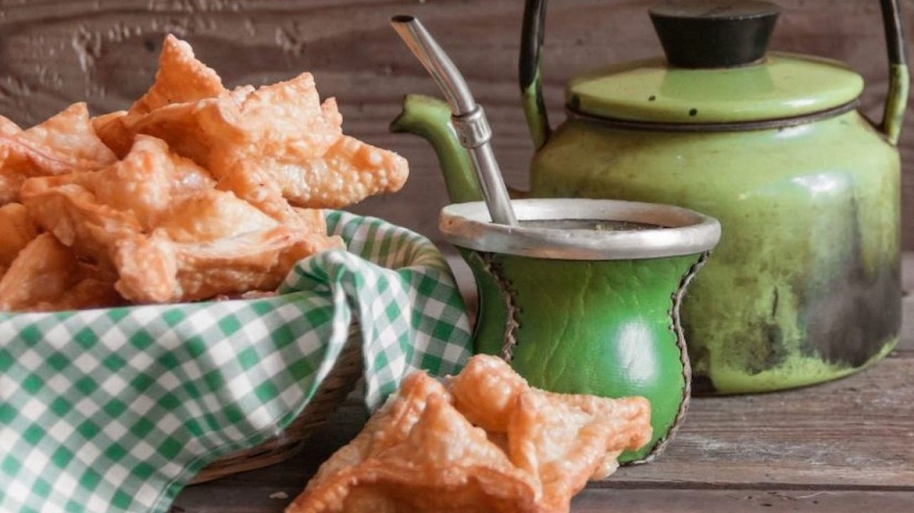

Receta de Pastelitos de Membrillo

Lista de ingredientes
24 tapas para pastelitos
dulce de membrillo
aceite para freir
Preparación
- Colocar un cubo de dulce de membrillo en el centro de cada tapa para pastelitos
- Pincelar con agua alrededor del dulce de membrillo
- Cubrir con otro cuadrado de masa con las puntas superpuestas.
- Pellizcar de abajo la masa, presionando en los bordes para cerrar los pastelitos.
- Freír con abundante aceite o grasa caliente hasta que se doren.
- Retirar y reservar
- Si se desea, pasar por almíbar o espolvorear con azúcar impalpable o azúcar común
- Y a disfrutar!!
Ver el video de la preparación!!!
Leer esta receta
Leer receta de Locro Criollo
Ir al inicio